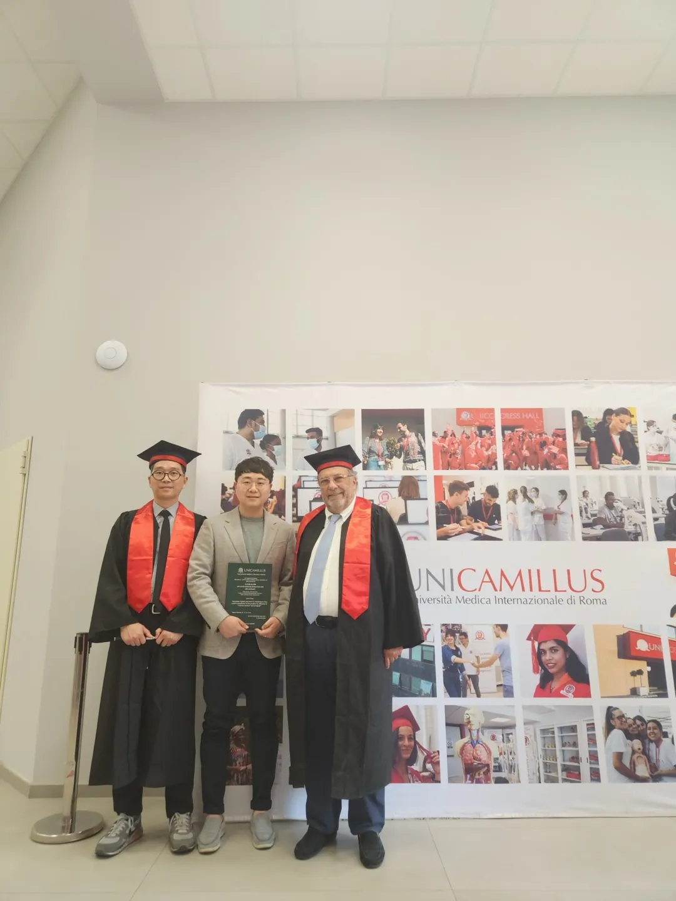
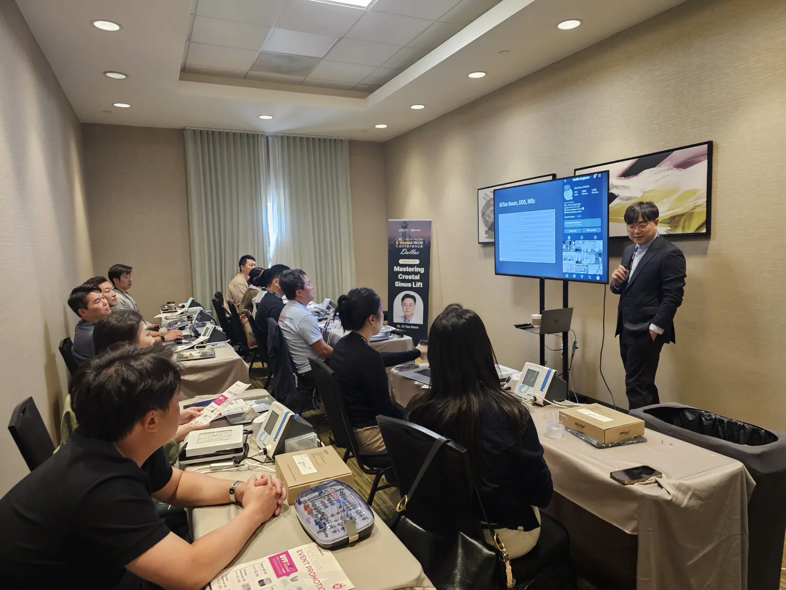
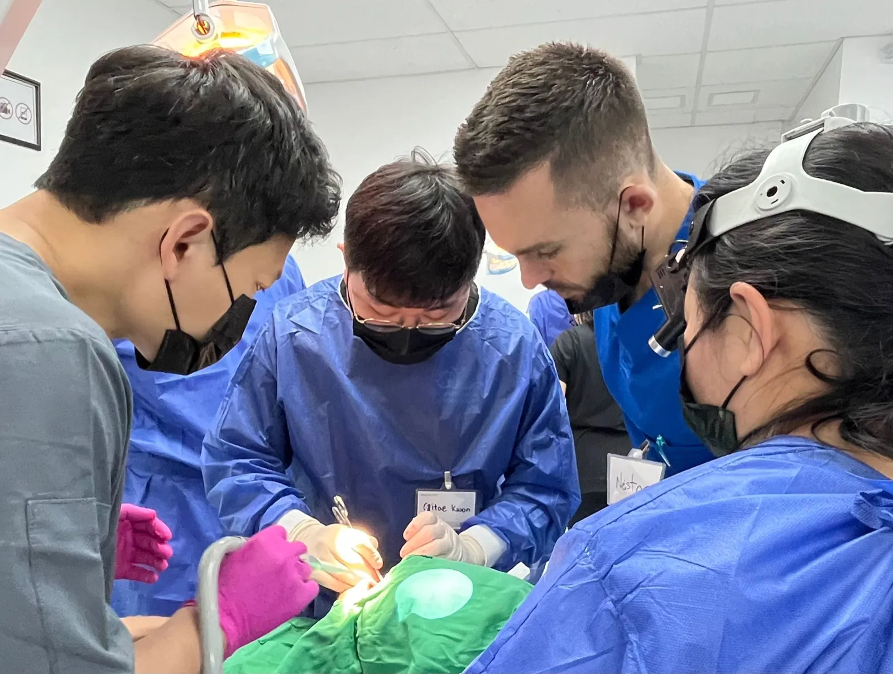
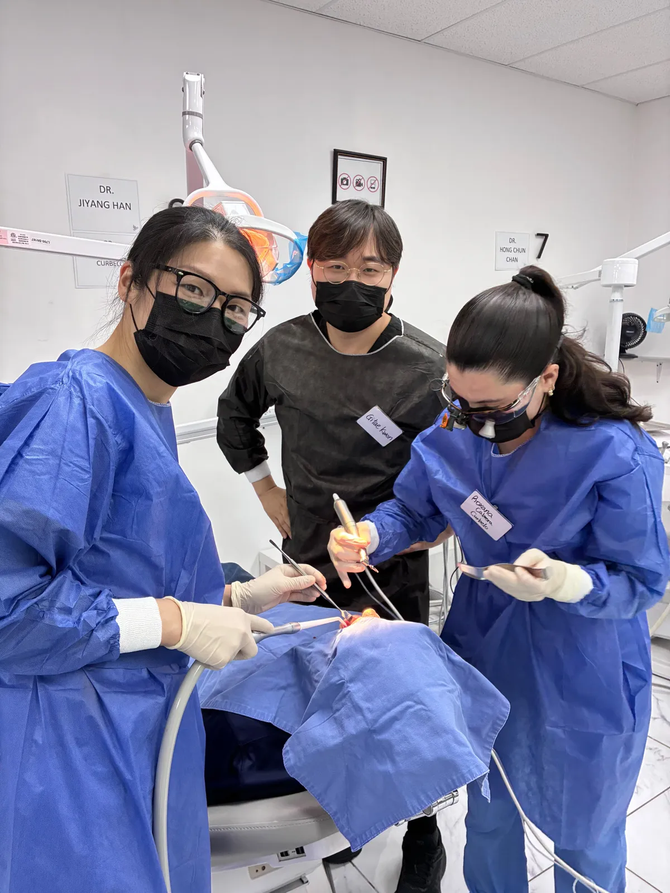
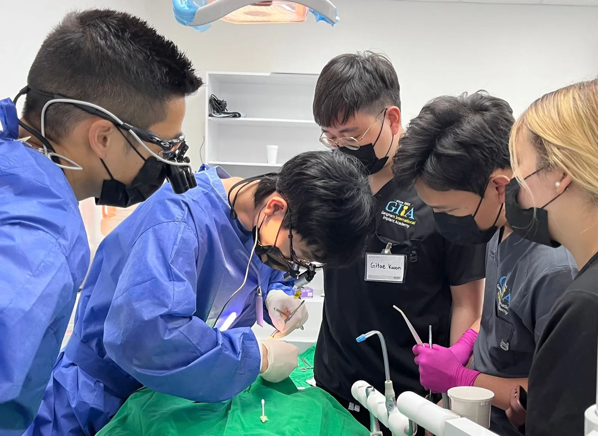
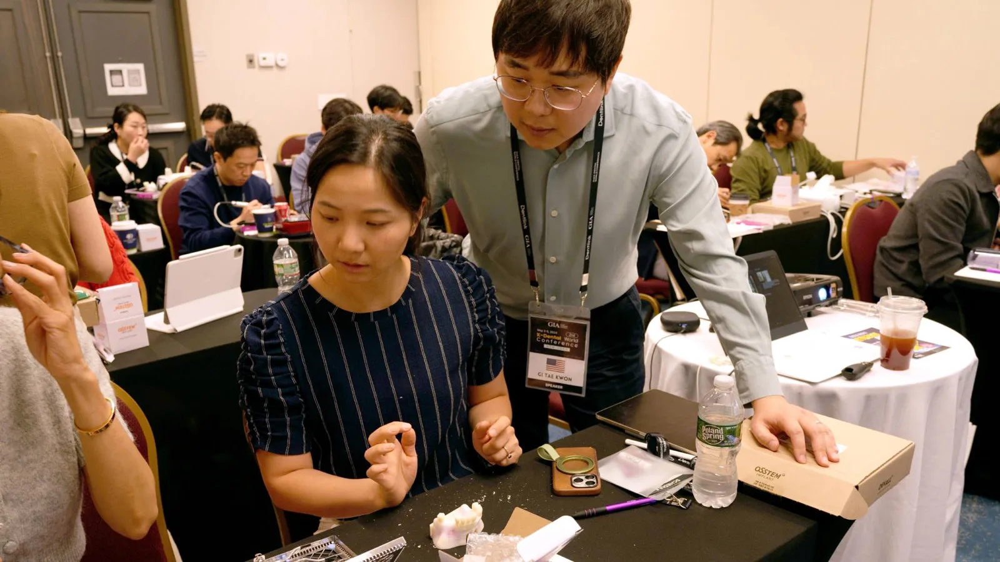
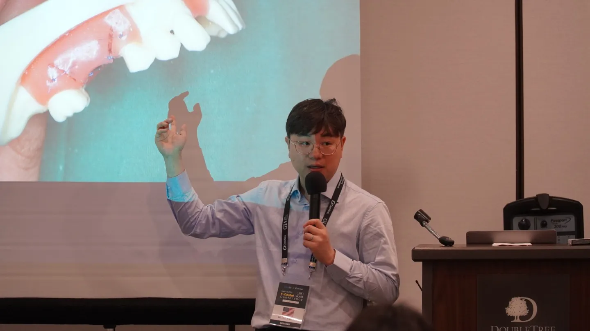
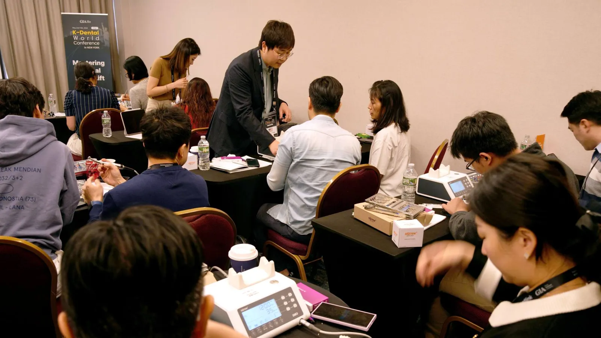
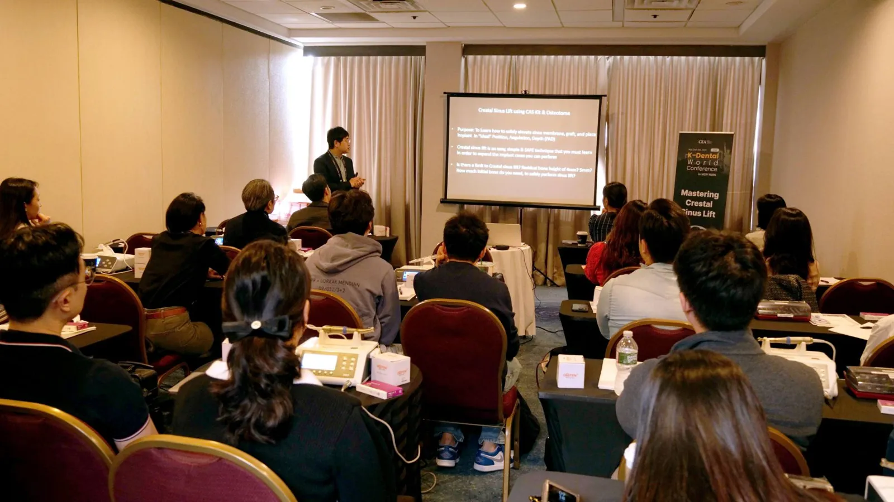

Meet the Doctor
Introducing Dr. GiTae Kwon, DDS MSc
Implant surgeon, teacher of implant surgery, and a dentist his patients describe as calm, careful and honest. He plans every case with the same care he teaches other dentists to use.

His Story
Thoughtful Care, Always Improving
Dr. GiTae Kwon, originally from South Korea and raised in New Jersey, has devoted more than a decade to private-practice dentistry with a simple philosophy: provide patients with thoughtful, personalized care and never stop improving as a clinician.
Dr. Kwon genuinely loves dentistry and values the relationships he builds with his patients. Known among colleagues for his passion, attention to detail and high standards, he takes the time to listen, communicate clearly and develop treatment plans tailored to each patient's individual needs, goals and circumstances.
He practices comprehensive general, cosmetic and implant dentistry. His work ranges from everyday restorative and aesthetic care to smile makeovers, porcelain veneers, advanced implant surgery, sinus augmentation, full-mouth rehabilitation, All-on-X treatment and newer X-on-X treatment concepts using the latest advances in full-arch implant dentistry. His goal is not simply to complete treatment, but to provide dentistry that is functional, natural-looking, long-lasting and thoughtfully designed for each individual patient.
For Dr. Kwon, learning and teaching are natural extensions of patient care. He believes dentistry requires a lifelong commitment to improvement, and that continued education, collaboration with colleagues around the world and exposure to evolving techniques allow him to provide more predictable, thoughtful and comprehensive care for his patients.
The practice's promise is his own: Dentistry Built on Trust. Implants Designed to Last.
Training and Credentials
Trained at NYU, Advanced in Rome

- New York UniversityGraduated summa cum laude.
- NYU College of DentistryDoctor of Dental Surgery (DDS). During dental school, received the Outstanding Achievement in Operative Dentistry Award from the Academy of Operative Dentistry.
- 2023, RomeMaster's degree (MSc) in Dental Implantology and Advanced Surgical Extractions, UniCamillus, Saint Camillus International University of Health Sciences, Rome, Italy.
- Visiting ProfessorUniCamillus, Rome, Italy, where he lectures on contemporary concepts in dental implantology and surgical treatment.
- Implant FacultyPart-time faculty at the Gangnam International Implant Academy (GIIA), teaching dental implant surgery and wisdom tooth extraction to fellow dentists. GIIA is sponsored by the implant companies HiOssen, Dentis, Neobiotech and Purgo.
- Live Surgery FacultyFaculty for the GIA Implant Seminar Live Surgery Course in Tijuana, Mexico, where several times each year he teaches fellow dentists through lectures, surgical demonstrations and hands-on live surgery.
- LecturerSince 2024, invited to lecture across North America on dental implant surgery, with a particular focus on implant treatment and sinus augmentation, from New York to California, Texas and Toronto, Canada.
- 2026, DallasTaught “Mastering Crestal Sinus Lift,” a hands-on course at the 4th K-Dental World Conference in Dallas, Texas.
- 2024, New YorkTaught “Mastering Crestal Sinus Lift in a Day,” a hands-on course at the 2nd K-Dental World Conference in New York.
- 2024, Los AngelesInterpreted in English for Dr. Youngsam Kim’s two-day third molar extraction seminar for dentists.
- AuthorHas published dental implant books and textbook translations with his mentor, Dr. Youngsam Kim, including Dr. Youngsam Kim’s Atlas of Implants. Their next book, on sinus lift surgery, is expected by the end of 2026.
Beyond the Practice
A Dentist Other Dentists Learn From
Beyond private practice, Dr. Kwon devotes a significant amount of time to studying emerging techniques, reviewing current research and refining his surgical and restorative approach. He teaches what he practices, so the methods he shows other dentists are the same ones he uses with his own patients.











How He Works
What to Expect in His Chair
A conversation first
You tell him what is bothering you and what you want. He listens before he looks.
An honest exam
He examines your teeth and gums, takes the imaging he needs, and shows you what he finds.
Options, explained plainly
You hear every reasonable option, including the simplest one, and what each involves in time and cost.
Work built to last
Treatment is planned carefully and done carefully, with follow-up visits to make sure it holds.
Off the Clock
Travel, Soccer and a Lot of Practice
Outside of clinical practice and teaching, Dr. Kwon enjoys traveling and experiencing different cultures, both personally and through the international teaching dentistry has brought into his career. Closer to home, he and Dr. Byungchul Park play in the evening soccer leagues at Chelsea Piers in Stamford. Meet Dr. Park